가베 수업

가베는 완성된 놀잇감이 아닌 사물의 기본적인 형체(입체), 면, 선, 점으로 이루어져 있습니다.
그렇기 때문에 가베는 완구라고 하지않고 교구라고 합니다.
아이들에게 장난감 로봇을 하나 사주면 얼마동안 호기심을 줄 수 있을까요?
가베는 정형화되지 않은, 만들어지지 않은 놀잇감이기 때문에 아이들에게 호기심과 창의력, 성취감을 줄 수 있는 매력적인 놀이가 됩니다.
가베교구를 통해 아이들은 표현하고자 하는 것을 마음껏 만들고 부수고 다시 새로운 것을 만들면서 생각하는 힘,
사물을 창조해내는 힘을 익혀 창조적인 사고를 가질수 있습니다.
놀이이기에 가베교육에서 선생님과 부모님의 역할은 가르치는 것이 아닌 가이드입니다. 가이드가 어떻게 이끄느냐에 따라
가베수업은 이것저것 너무나도 할것이 많은 놀이가 되기도 하고
어떻게 하는지 몰라 하고 무관심하게 있으면 정말 할게 없는 놀이가 되기도 합니다.
가베로 표현할 수 있는 것들을 감상해 보시죠.
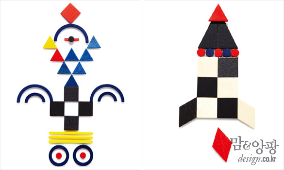
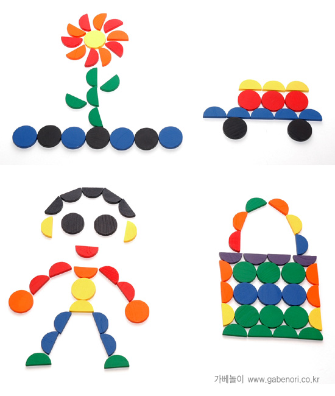
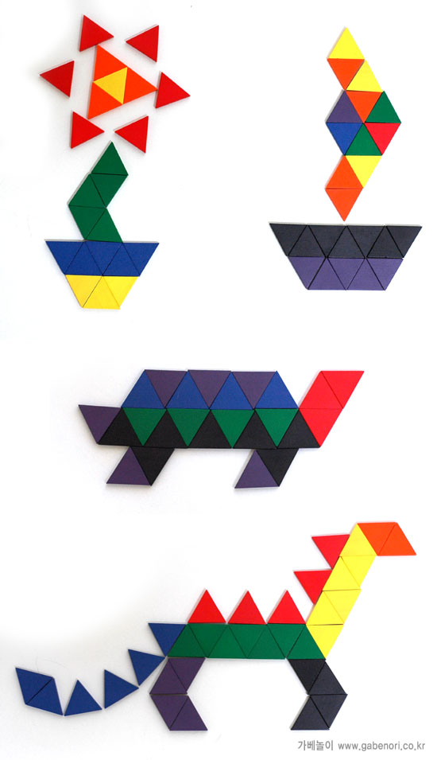
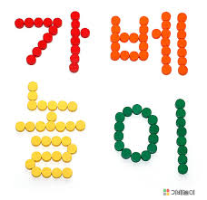
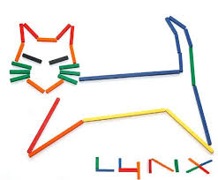
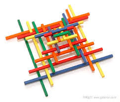
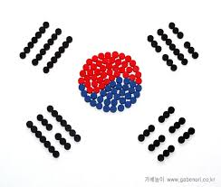
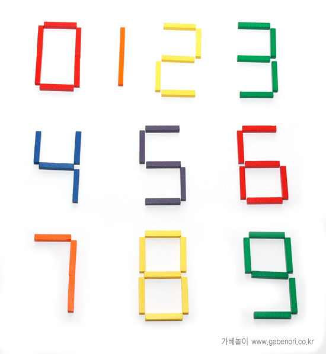
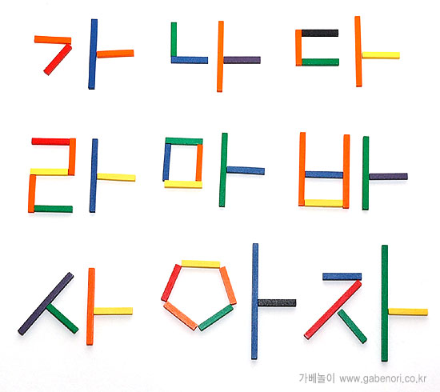

 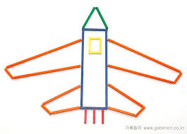
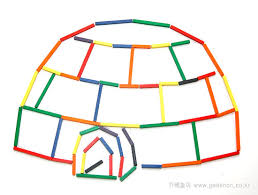
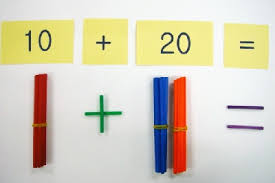
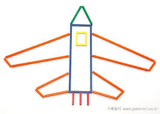
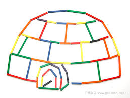
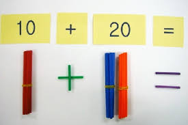
 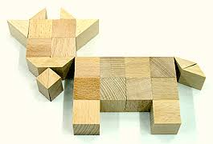
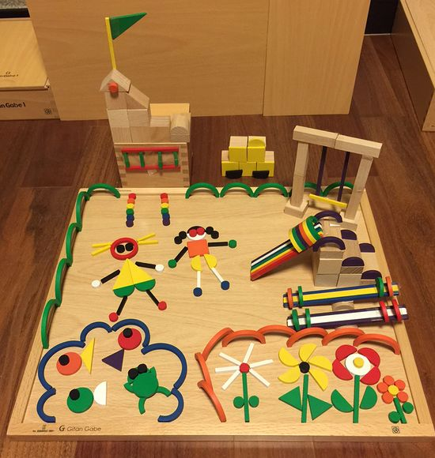
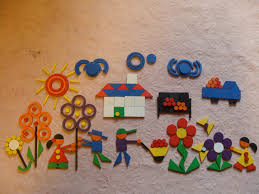
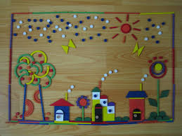
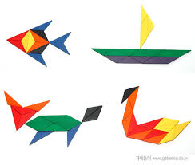
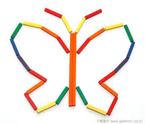
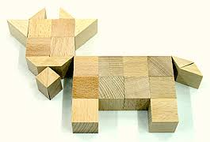
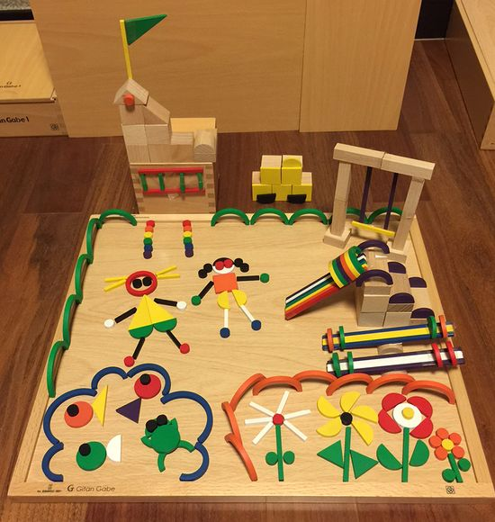
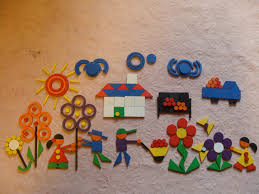
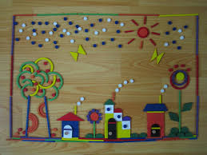
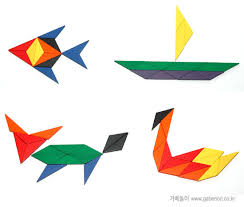
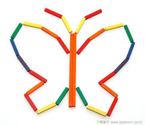